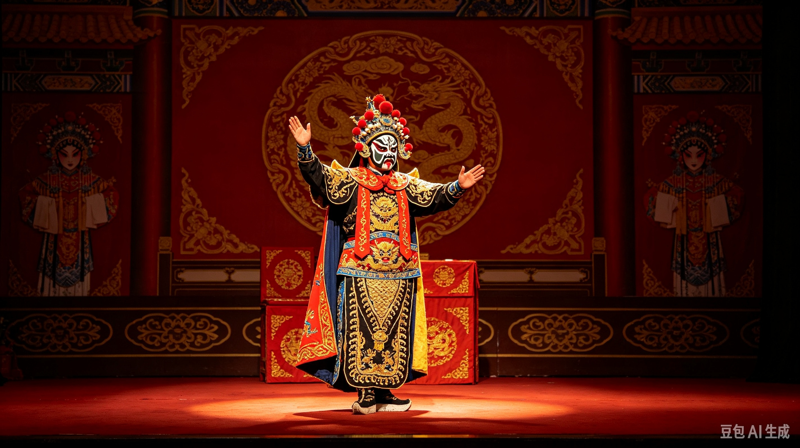
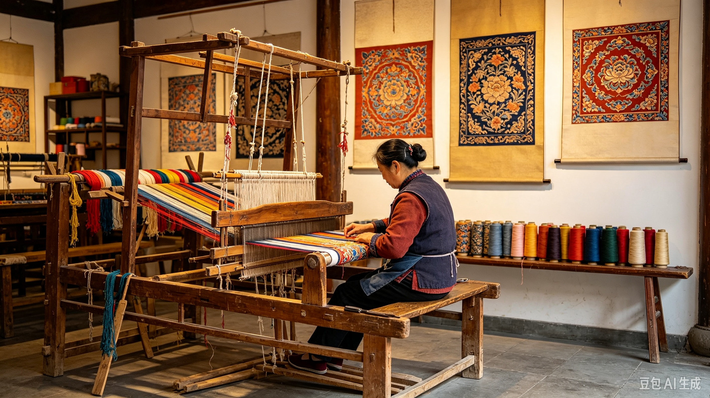
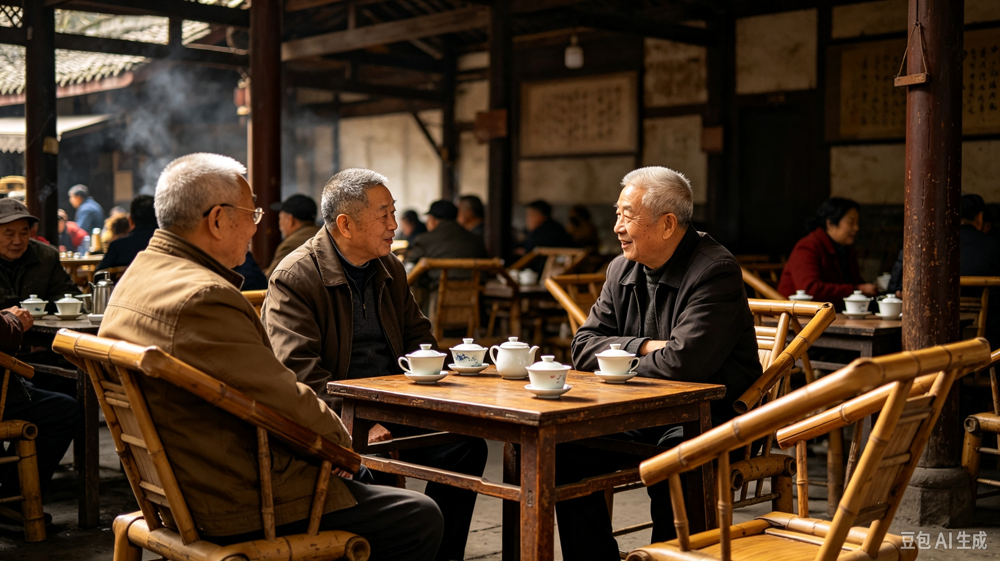
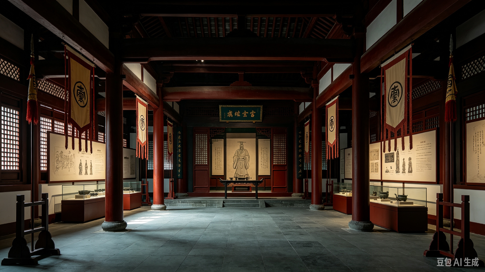

天府文化
川剧变脸、蜀锦蜀绣、茶馆文化、三国文化...

川剧变脸
川剧是传统戏曲剧种之一，而“变脸”是其绝活。演员在瞬间变换面部脸谱，神秘莫测，令人叹为观止，是巴蜀文化的瑰宝。

蜀锦蜀绣
蜀锦是中国四大名锦之一，蜀绣则是四大名绣之一。色彩鲜艳、针法严谨，一针一线间尽显天府之国的锦绣华美与工匠精神。

茶馆文化
“坐茶馆”是成都人的一种生活方式。竹靠椅、盖碗茶、采耳师傅，在人民公园的鹤鸣茶社，你可以体会到最地道的成都慢生活。

三国文化
成都是蜀汉政权的都城，武侯祠承载着深厚的三国历史底蕴。诸葛亮的智慧与刘备的仁义，在这里留下了不可磨灭的历史印记。